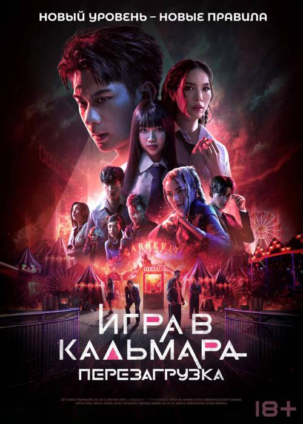

Игра в Кальмара Перезаргузка (2025)
Жанр:Триллера, Драма
Режиссёр: Хван Дон Хёк
В ролях: Ли Джонджэ; Ли Бёнхон; Ви Хаджун; Лим Сиван; Кан Ханыль; Пак Сонхун; Ян Донгын; Чо Юри; Кан Э Cим; Пак Кюён
Описание:Третий сезон «Игры в кальмара», запланированный к выходу в 2025 году, станет заключительным для сериала. Сюжет продолжит историю Сон Ки Хуна и раскроет, как он будет бороться с организаторами смертельных игр. Также ожидается, что третий сезон прольет свет на предысторию Хван Ин Хо, который стал ведущим игр.
Продолжительность: 2ч 46мин
Забронировать билет